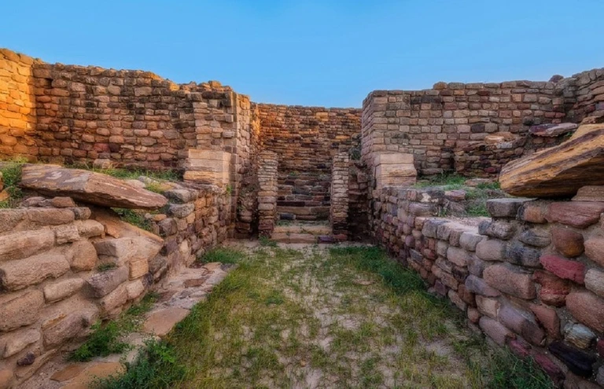

Constructed in 1600,
Rasmancha is an extremely beautiful piece of an architectural masterpiece in West Bengal. This site is located in Bishnupur that is situated in the Bankura district of the state. When you go there, you will see the resemblance of a pyramid to the monument quite easily. Created by using laterite stones, and burnt bricks, Rasmancha is genuinely picturesque. to know more click here

A real treat for historians,
to know more click here
Dholavira is one of Gujarat’s best-kept archaeological and historical sites dating back to the Indus Valley Civilization. It is full of historic treasures, including seals with animal figures, funerary structures, letters of the Indus script, stone sculptures, pottery with painted motifs, terracotta ornaments, sign boards, and several other structures and objects. to know more click here

One of the most notable sites of Kolkata, Victoria Memorial is a must-see monument in Kolkata. Constructed in the year 1921, this building was dedicated to Queen Victoria of England. It was commissioned by the then Viceroy of India, Lord Curzon. The architecture of Victoria Memorial was handled by architect William Emerson, the member of the Royal Institute of British Architects. I
to know more click here
to know more click here